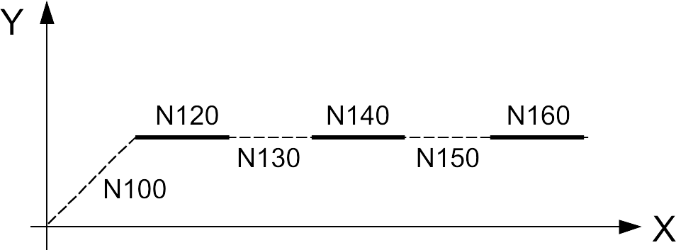

Laserschneiden
TC_LASER_ON
Mit dem Zyklusaufruf TC_LASER_ON werden folgende Maschinenbefehle unabhängig von den eingegebenen Zyklusparametern ausgeführt:
-
Abstandsregelung einschalten.
-
Einstechtgas anwählen.
-
Z-Achse in Einstechposition fahren.
-
Strahl zum Einstechen einschalten.
-
Schneidgas anwählen.
-
Z-Achse in Schneidposition fahren.
-
Strahl zum Schneiden einschalten.
-
Fokuslage anwählen.
-
Strahldurchmesser anwählen.
-
Laserleistung anwählen.
TC_LASER_ON (Laserverfahren,"Technologietabelle",Einstechtyp,Schneidtyp)
-
Die Parameter der Technologietabelle für TC_LASER_ON für verschiedene Materialien und Materialstärken stehen an der Maschinensteuerung zur Verfügung. Der Name der passenden Technologietabelle muss zum Zeitpunkt der Programmierung angegeben werden.
-
Werden reine Schneid- oder Einstechzyklen aufgerufen, muss der Wert "0" für den Zyklusparameter "Einstechtyp" oder "Schneidtyp" eingegeben werden.
-
Wird durch TC_LASER_OFF gelöscht.
Folgende Laserverfahren stehen zur Verfügung:
| Laserverfahren | Funktionen |
|---|---|
1 oder 9 |
Einstechen und Schneiden mit Abstandsregelung. |
2 oder 10 |
Einstechen und Schneiden ohne Abstandsregelung. |
3 |
Einstechen ohne Abstandsregelung, Schneiden mit Abstandsregelung. |
4 |
Einstechen mit Abstandsregelung, Schneiden ohne Abstandsregelung. |
5 oder 11 |
Schneiden mit Abstandsregelung. |
6 oder 12 |
Schneiden ohne Abstandsregelung. |
7 |
Einstechen mit Abstandsregelung, Strahl AUS. |
8 |
Einstechen ohne Abstandsregelung, Strahl AUS. |
30 |
Microweld |
Zyklusparameter: Daten werden über den Einstechtyp aus der aktiven Technologietabelle ausgewählt. Dort sind mehrere Einstechtypen hinterlegt:
| Nummer | Funktionen |
|---|---|
0 |
Kein Einstechen |
10 |
Normales Einstechen |
11 |
Sanftes Einstechen |
20 |
Punktmarkierung |
30 |
Sonderbearbeitung hartes Microweld |
31 |
Sonderbearbeitung weiches Microweld |
Zyklusparameter: Daten werden über den Schneidtyp aus der aktiven Technologietabelle ausgewählt. Schneiddaten (z. B. Laserleistung, Schneid- und Anfahrparameter) sind dort für verschiedene Bearbeitungsanforderungen hinterlegt. Unterschieden wird nach:
-
Große, mittlere oder kleine Kontur.
-
Normale oder reduzierte Schneidgeschwindigkeit.
-
Normale oder reduzierte Beschleunigungswerte.
Der Schneidtyp wird über eine dreistellige Zahl ausgewählt, wobei jede Ziffer eine bestimmte Bedeutung hat:
| 1. Ziffer: Kontur | 2. Ziffer: Schneidgeschwindigkeit | 3. Ziffer: Beschleunigung |
|---|---|---|
1 = große Kontur |
0 = normal |
0 = normal |
2 = mittlere Kontur |
1 = reduziert ab Einstechloch |
1 = reduziert |
3 = kleine Kontur |
- |
2 = hoch |
| Beispiel | Erklärung |
|---|---|
0 |
Kein Schneiden. |
100 |
Große Kontur schneiden mit normaler Beschleunigung. |
101 |
Große Kontur schneiden mit reduzierter Beschleunigung. |
200 |
Mittlere Kontur schneiden mit normaler Beschleunigung. |
210 |
Mittlere Kontur schneiden mit reduzierter Anfahrgeschwindigkeit ab Einstechloch und normaler Beschleunigung. |
211 |
Mittlere Kontur schneiden mit reduzierter Anfahrgeschwindigkeit ab Einstechloch und reduzierter Beschleunigung. |
310 |
Kleine Kontur schneiden mit reduzierter Anfahrgeschwindigkeit ab Einstechloch und normaler Beschleunigung. |
Zusätzlich zu diesen Standard-Schneidtypen gibt es 3 Sonderschneidtypen:
| Sonderschneidtyp | Erklärung |
|---|---|
400 |
Sonderbearbeitung: Verdampfung. |
500 |
Sonderbearbeitung: Markierung. |
600 |
Sonderbearbeitung: Geometrische Punktmarkierung. |
| TC_LASER_ON(1,"1778",10,100) | |
|---|---|
Laserverfahren 1 |
Einstechen und Schneiden mit Abstandsregelung. |
Einstechtyp 10 |
Normales Einstechen. |
Schneidtyp 100 |
Große Kontur schneiden mit normaler Beschleunigung. |
Mit den Laserverfahren 5 oder 11 und 6 oder 12 kann das Schneiden mit "fliegendem Datenaustausch" programmiert werden. Wird ein weiterer TC_LASER_ON-Aufruf mit den Verfahren 5 oder 11 und 6 oder 12 programmiert und der Strahl bereits gezündet, kann wie folgt umgeschaltet werden:
-
Umschalten zwischen verschiedenen Schneiddaten innerhalb einer Technologietabelle (z. B. aufgrund einer Konturänderung).
-
Umschalten zwischen verschiedenen Technologietabellen.
Bei Änderungen der Laserleistung und Taktfrequenz sowie bei geringfügigen Änderungen der Schneidparameter wie Gasdruck, Taktfrequenz und Schneidabstand ist kein Achsstillstand erforderlich. Die Umschaltung auf die neuen Parameter erfolgt während der Bearbeitung.
-
Keine Kerben durch Reduzierung der Schneidgeschwindigkeit beim Datenaustausch.
-
Schnellere Bearbeitung durch "fliegenden Datenaustausch".
| Block | NC-Programm | Beschreibung |
|---|---|---|
N100 |
TC_LASER_ON(1,"1778",10,100) |
Einstechen und Schneiden großer Konturen. |
N110 |
G01 X20 Y40 |
- |
N120 |
TC_LASER_ON(5,"1778",0,300) |
"Fliegender Datenaustausch": Kleine Kontur schneiden. |
N130 |
G02 I0 J10 |
- |
N140 |
TC_LASER_OFF(1) |
- |
TC_LASER_OFF
Abhängig von den eingegebenen Parametern werden mit dem Zyklusaufruf TC_LASER_OFF folgende Maschinenbefehle ausgeführt:
-
Laserstrahl ausschalten.
-
Z-Achse positionieren.
Der Zyklus TC_LASER_OFF wird mit einem Zyklusparameter im NC-Programm aufgerufen:
TC_LASER_OFF(Laserverfahren)
Folgende TC_LASER_OFF-Zyklen stehen zur Verfügung:
| Laserverfahren | Funktionen |
|---|---|
1 |
Strahl aus, Z-Achse auf Überfahrhöhe (Standard-Überfahrhöhe = 40 mm). |
2 |
Strahl aus, Schneidgas aus, Hochspannung aus, Z-Achse in Ausgangsposition. |
3 |
Entspricht Verfahren 1. |
4 |
Strahl aus, Z-Achse bleibt auf Bearbeitungsabstand (auf Einstechhöhe für folgende Einstechvorgänge / auf Schneidhöhe für folgende Schnitte). |
6 |
Bei RotoLas: Laserstrahl aus, Z-Achse auf Überfahrhöhe (bezogen auf den Außenkreis). |
10 |
Strahl aus, Vorbereitung für hartes Microweld. |
11 |
Strahl aus, Vorbereitung für weiches Microweld. |
Die Laserverfahren werden wie folgt eingesetzt:
-
Wird Laserverfahren 1 programmiert, muss die Überfahrhöhe zum Anfahren der Z-Achse zuvor mit TC_POS_LEVEL programmiert werden. Dieses Verfahren wird verwendet, um den Laserstrahl nach einem bearbeiteten Teil auszuschalten und das nächste Teil zu positionieren.
-
Laserverfahren 2 wird verwendet, um den Laserstrahl am Ende der Teileprogrammierung auszuschalten und die Z-Achse in die Ausgangsposition zu fahren.
-
Laserverfahren 3 entspricht Laserverfahren 1.
-
Laserverfahren 4 wird bei der Bearbeitung von "Gemeinsamen Schnitten" und für SprintLine verwendet. Während der Positionierung dürfen sich niemals Löcher oder Umformungen im Verfahrweg des Schneidkopfes befinden.
TC_WAIT
Laserzyklus zur Eckenabkühlung zur Vermeidung von Einbränden. Der Laserstrahl wird ausgeschaltet.
TC_WAIT (Funktion, Zeit)
| Funktionen | Beschreibung |
|---|---|
Keine Angabe |
Wartezeit aus der Lasertechnologietabelle wird verwendet. |
0 |
Wartezeit aus der Lasertechnologietabelle wird verwendet. |
1 |
Verzögerungszeit wird aus dem Übergabeparameter "Zeit" verwendet. |
2 |
Warten auf Starttaste (unbedingter Halt M0). |
| Die Funktion ist optional. |
| Funktionen | Beschreibung |
|---|---|
Zeit |
Zeitangabe in Sekunden. |
G823 (FlyLine)
Programmierung einer konturbezogenen Strahlunterdrückung. Mit der Funktion G823 kann der Laserstrahl blockbezogen unterdrückt werden. Gleichzeitig wird der Strahl am Blockübergang ungestützt abgeschaltet. Folgt auf einen Verfahrblock mit dieser Funktion ein weiterer Verfahrblock ohne G823-Funktion, wird der Strahl am Blockübergang ungestützt gezündet. Die jeweiligen Prozessparameter bleiben dabei unverändert. Die Strahlunterdrückung ist dabei nicht auf Linearblöcke beschränkt.
G823
| Die Funktion G823 ist einer Gruppe von G-Befehlen zugeordnet. Aus dieser Gruppe darf nur ein G-Befehl innerhalb eines NC-Blocks verwendet werden. Zu dieser Gruppe gehören die G-Befehle G820 – G829. |
-
Die Funktion wird nur wirksam, wenn die Laserbearbeitung zuvor durch TC_LASER_ON aktiviert wurde.
-
Ein Einstechvorgang muss ohne Achsstillstand möglich sein, wenn das Material oder die Materialstärke gewählt ist.
-
Je nach Maschine kann FlyLine für verschiedene Materialstärken eingesetzt werden (genaue Angaben zur Materialstärke finden Sie in der Datensammlung der betreffenden Maschine).

| Block | NC-Programm | Beschreibung |
|---|---|---|
N100 |
G01 G90 X10 Y10 |
- |
N110 |
TC_LASER_ON(5,"4711",0,100) |
Laser EIN. |
N120 |
X20 |
- |
N130 |
X30 G823 |
- |
N140 |
X40 |
- |
N150 |
X50 G823 |
- |
N160 |
X60 |
- |
N170 |
TC_LASER_OFF(3) |
- |
TC_POS_MODE
Der Zyklus TC_POS_MODE steuert den Positioniervorgang des Schneidkopfes zwischen den Schneidvorgängen.
TC_POS_MODE (Wert)
-
Selbsthaltende (modale) Wirkung.
-
Wird durch erneute Programmierung des Zyklus, das Programmende oder Betätigung der Reset-Taste deaktiviert.
| Wert | Erklärung |
|---|---|
0 |
Standardverhalten. |
1 |
Ungestütztes Wegfahren von der Kontur nach TC_LASER_OFF. |
2 |
Voraussetzung für die Programmierung dieses Werts ist, dass ohne Einstechen und mit TC_LASER_OFF(4) programmiert wird.
|
|
TC_FLUID_ON (Option)
Der Zyklus TC_FLUID_ON aktiviert die Wasserbesprühung. Die Wasserbesprühung wird beim Laserbrennschneiden eingesetzt.
TC_FLUID_ON
-
Die Wasserbesprühung wird generell über die Maschinentechnologietabellen gesteuert (Programmeigenschaften). Modus 0 oder 1 schaltet die Wasserbesprühung generell im Gesamtprogramm ein oder aus. Ist in der Maschinentechnologietabelle Modus 2 aktiv, kann die Wasserbesprühung programmgesteuert über den Zyklus TC_FLUID_ON aktiviert und über TC_FLUID_OFF deaktiviert werden.
-
Wird durch Programmende, Programmunterbrechung oder TC_FLUID_OFF deaktiviert.
-
Konturbezogen: Muss vor TC_LASER_ON programmiert werden.
| Block | NC-Programm | Beschreibung |
|---|---|---|
N110 |
TC_SHEET_TECH("SHT-1") |
- |
N120 |
TC_SHEET_LOAD("SHL-1") |
Palettenwechsel |
N130 |
TC_LASER_HEAD("LHT-1") |
Schneidköpfe aktivieren |
N140 |
X500 Y300 |
Positionierbewegung |
N150 |
TC_FLUID_ON |
Wasserbesprühung aktivieren |
N160 |
TC_LASER_ON(1,"T2D-5102",10,100) |
Laser ein |
… |
X… Y… |
Konturbearbeitung |
N200 |
TC_LASER_OFF(1) |
Laser AUS |
N210 |
TC_FLUID_OFF |
Wasserbesprühung deaktivieren |
TC_FLUID_OFF (Option)
Der Zyklus TC_FLUID_OFF deaktiviert die Wasserbesprühung.
TC_FLUID_OFF
-
Die Wasserbesprühung wird generell über die Maschinentechnologietabellen gesteuert (Programmeigenschaften). Modus 0 oder 1 schaltet die Wasserbesprühung generell im Gesamtprogramm ein oder aus. Ist in der Maschinentechnologietabelle Modus 2 aktiv, kann die Wasserbesprühung programmgesteuert über den Zyklus TC_FLUID_ON aktiviert und über TC_FLUID_OFF deaktiviert werden.
-
Deaktiviert TC_FLUID_ON.
-
Wird durch Programmende oder Programmabbruch deaktiviert.
-
Konturbezogen: Muss nach TC_LASER_OFF programmiert werden.
| Block | NC-Programm | Beschreibung |
|---|---|---|
N110 |
TC_SHEET_TECH("SHT-1") |
- |
N120 |
TC_SHEET_LOAD("SHL-1") |
Palettenwechsel |
N130 |
TC_LASER_HEAD("LHT-1") |
Schneidköpfe aktivieren |
N140 |
X500 Y300 |
Positionierbewegung |
N150 |
TC_FLUID_ON |
Wasserbesprühung aktivieren |
N160 |
TC_LASER_ON(1,"T2D-5102",10,100) |
Laser ein |
… |
X… Y… |
Konturbearbeitung |
N200 |
TC_LASER_OFF(1) |
Laser AUS |
N210 |
TC_FLUID_OFF |
Wasserbesprühung deaktivieren |